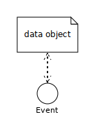

Information and Process Modeling for Simulation – Part I: Objects and Events
ACM Subject Categories
-
Computing methodologies~Modeling methodologies
Keywords
- Conceptual Model
- Design Model
- Information Model
- Process Model
Abstract
In simulation engineering, a system model mainly consists of an information model describing a system's state structure and a process model describing its dynamics. In the fields of Information Systems and Software Engineering, there are widely used standards such as the Class Diagrams of the Unified Modeling Language (UML) for making information models, and the Business Process Modeling Notation (BPMN) for making process models. This tutorial presents a general Object Event Modeling (OEM) approach for Discrete Event Simulation modeling using UML class diagrams and BPMN-based process diagrams at all three levels of model-driven simulation engineering: for making conceptual domain models, for making platform-independent simulation design models, and for making platform-specific, executable simulation models. In this approach, object and event types are modeled as special categories of UML classes, random variables are modeled as a special category of UML operations constrained to comply with a specific probability distribution, and queues are modeled as ordered association ends, while event rules are modeled both as BPMN-based process diagrams and pseudo-code. In Part II, we discuss the more advanced OEM concepts of activities and GPSS/SIMAN/Arena-style Processing Networks. Finally, in Part III, we further extend the OEM paradigm towards agent-based modeling and simulation by adding the concepts of agents with perceptions, actions and beliefs.
Introduction
The term simulation engineering denotes the scientific engineering discipline concerned with the development of computer simulations, which are a special class of software applications. Since a running computer simulation is a particular kind of software system, we may consider simulation engineering as a special case of software engineering.
Although there is a common agreement that modeling is an important first step in a simulation project, it is also thought to be the least
understood part of simulation engineering (Tako, Kotiadis, & Vasilakis, 2010). In a panel discussion on conceptual
simulation modeling (Zee et al., 2010), the participants agreed that there is a lack of standards, on procedures,
notation, and model qualities
. On the other hand, there is no such lack in the field of Information Systems and Software Engineering
(IS/SE) where standards such as the Unified Modeling Language (UML) and the Business Process Modeling Notation (BPMN)
have been widely adopted, and various modeling methodologies and model quality assurance methods have been established.
The standard view in the simulation literature, see, e.g., (Himmelspach, 2009), is that a simulation
model can be expressed either in a general purpose programming language or in a specialized simulation language. However, the term
model
in simulation model typically refers to a low-level computer program rather than a higher-level representation expressed
in a diagrammatic modeling language. In a modeling and simulation project, despite the fact that modeling
is part of the
discipline’s name, often no information or process models are produced, but rather the modeler jumps from her mental model to its
implementation in some target technology platform. Clearly, as in IS/SE, making conceptual models and design models is important for several
reasons: as opposed to a low-level computer program, a high-level model is more comprehensible and easier to communicate, share, reuse,
maintain and evolve. Furthermore, it can also be used for obtaining platform-specific implementation code, possibly with the help of model
transformations and code generation.
Due to their expressiveness and wide adoption as modeling standards, UML and BPMN seem the most appropriate choices as information and process modeling languages for a model-based simulation engineering approach. However, since they have not been designed for this purpose, we may have to restrict, modify and extend them in a suitable way.
Several authors, e.g., (Wagner, Nicolae, & Werner, 2009), (Cetinkaya, Verbraeck, & Seck, 2011), and (Onggo & Karpat, 2011), have proposed to use BPMN for Discrete Event Simulation (DES) modeling and for agent-based modeling. However, process modeling in general is much less understood than information modeling, and there are no guidelines and no best practices how to use BPMN for simulation modeling. Schruben (1983), with his Event Graph diagram language, has pioneered the research on process modeling languages for DES based on the modeling concept of event types and the operational semantics concept of event scheduling with a future events list. Remarkably, Event Graphs correspond to a fragment of BPMN (without Activities and Pools), which indicates the potential of BPMN as a basis of a general process modeling language for DES.
This tutorial article extends and improves the modeling approach presented in (Wagner, 2017b). In particular, the BPMN-based process design modeling approach has been revised and refined by using a variant of BPMN, called Discrete Event Process Modeling Notation (DPMN), which is discussed in Section 5.
This first part of the tutorial presents the Object-Event Modeling (OEM) paradigm and an OEM approach for developing basic
discrete event simulations. First, short introductions to model-driven engineering, to information modeling with UML class diagrams, and to
process modeling with BPMN and DPMN process diagrams are presented. Next, two examples are provided to illustrate how to apply the OEM
paradigm to developing discrete event simulations. In Part II of this tutorial,
we discuss the more advanced modeling concepts of
activities and GPSS/SIMAN/Arena-style Processing Networks where work objects flow through the system
by entering it
through an arrival event at an entry node, then passing one or more processing nodes, where processing activities
are being performed, and finally leaving it through a departure event at an exit node. Finally, Part III will show how to
add the modeling concepts of agents with perceptions, actions and beliefs, resulting in a general
agent-based DES modeling framework.
In the OEM paradigm, the relevant object types and event types are described in an information model, which is the basis for making a process model. A modeling approach that follows the OEM paradigm is called an OEM approach. Such an approach needs to choose, or define, an information modeling language and a process modeling language. Possible choices are Entity Relationship Diagrams or UML Class Diagrams for information modeling, and UML Activity Diagrams or BPMN Process Diagrams for process modeling.
We propose an OEM approach based on UML Class Diagrams for conceptual information modeling and information design modeling, as well as BPMN Process Diagrams for conceptual process modeling and DPMN Process Diagrams for process design modeling. In the proposed approach, object types and event types are modeled as special categories of classes in a UML Class Diagram. Random variables are modeled as a special category of class-level operations constrained to comply with a specific probability distribution such that they can be implemented as static methods of a class. Queues are not modeled as objects, but rather as ordered association ends, which can be implemented as collection-valued reference properties. Finally, event rules, which include event routines, are modeled both as BPMN/DPMN process diagrams and in pseudo-code such that they can be implemented in the form of special onEvent methods of event classes.
An OEM approach results in a simulation design model that has a well-defined operational semantics, as shown in (Wagner, 2017a). Such a model can, in principle, be implemented with any object-oriented (OO) simulation technology. However, a straightforward implementation can only be expected from a technology that implements the Object-Event Simulation (OES) paradigm proposed in (Wagner, 2017a), such as the OES JavaScript (OESjs) framework presented in (Wagner, 2017c).
There are two examples of systems, which are paradigmatic for DES (and for operations research): service/processing
systems with queues (also called queuing networks
) and inventory management systems. However, neither of them has yet
been presented with elaborate information and process models in tutorials or textbooks. In this tutorial, we show how to make information and
process models of an inventory management system and of a service system, and how to code them using the JavaScript-based simulation framework
OESjs.
What Is Discrete Event Simulation?
The term Discrete Event Simulation (DES) has been established as an umbrella term subsuming various kinds of computer simulation
approaches, all based on the general idea of modeling entities/objects and events. In the DES literature, it is often stated that DES is based
on the concept of entities flowing through the system
(more precisely, through a queueing network
). This is the paradigm of an
entire class of simulation software in the tradition of GPSS (Gordon, 1961) and SIMAN/Arena (Pegden
& Davis, 1992). However, this paradigm characterizes a special (yet important) class of DES only, it does not apply to all discrete
dynamic systems.
In Ontology, which is the philosophical study of what there is, entities (also called individuals) are distinguished from entity types (called universals). There are three fundamental categories of entities:
- objects ,
- tropes , which are existentially dependent entities such as the qualities and dispositions of objects and their relationships with each other, and
- events .
These ontological distinctions are discussed, e.g., by Guizzardi and Wagner (2010a, 2010b, 2013).
While the concept of an event is often limited to instantaneous events in the area of DES, the general concept of an event, as discussed in philosophy and in many fields of computer science, includes composite events and events with non-zero duration.
A discrete event system (or discrete dynamic system) consists of
- objects (of various types) having a state (consisting of qualities) and dispositions,
- events (of various types) triggering certain dispositions of objects participating in them,
such that the states of affected objects may be changed by events according to the dispositions triggered by them. It is natural to consider the concept of discrete events, occurring at times from a discrete set of time points.
For modeling a discrete event system as a state transition system, we have to describe its
- object types , e.g., in the form of classes of an object-oriented language;
- event types , e.g., in the form of classes of an object-oriented language;
- causal regularities (disposition types) e.g., in the form of event rules.
Any DES formalism has one or more language elements that allow specifying event rules representing causal regularities. These rules specify, for any event type, the state changes of objects and the follow-up events caused by the occurrence of an event of that type, thus defining the dynamics of the transition system. Unfortunately, this is often obscured by the standard definitions of DES that are repeatedly presented in simulation textbooks and tutorials.
According to Pegden (2010), a simulation modeling worldview provides a framework for defining a system in
sufficient detail that it can be executed to simulate the behavior of the system
. It must precisely define the dynamic state
transitions that occur over time
. Pegden explains that the 50 year history of DES has been shaped by three fundamental paradigms:
Markowitz, Hausner, and Karr (1962) pioneered the event worldview with SIMSCRIPT, Gordon (1961) pioneered the processing network worldview with GPSS, and Dahl and Nygaard (1966) pioneered the object worldview with Simula. Pegden characterizes these paradigms in the
following way:
Event worldview: The system is viewed as a series of instantaneous events that change the state of the system over time. The modeler defines the events in the system and models the state changes that take place when those events occur. According to Pegden, the event worldview is the most fundamental worldview since the other worldviews also use events, at least implicitly.
Processing Network worldview: The system under investigation is described as a processing network where entities flow through the system
(or, more precisely,
work objects are routed through the network) and are subject to a series of processing steps performed at processing nodes through processing
activities, possibly requiring resources and inducing queues of work objects waiting for the availability of resources (processing networks
have been called queueing networks
in Operations Research). This approach allows high-level modeling with semi-visual languages and is
therefore the most widely used DES approach nowadays, in particular in manufacturing industries and service industries. Simulation platforms
based on this worldview may or may not support object-oriented modeling and programming.
Object worldview: The system is modeled by describing the objects that make up the system. The system behavior emerges from the interaction
of
these objects.
All three worldviews lack important conceptual elements. The event worldview does not consider objects with their (categorical and dispositional) properties. The processing network worldview neither considers events nor objects. And the object worldview, while it considers objects with their categorical properties, does not consider events. None of the three worldviews includes modeling the dispositional properties of objects with a full-fledged explicit concept of event rules.
The event worldview and the object worldview can be combined in approaches that support both objects and events as first-class citizens. This seems highly desirable because (1) objects (and classes) are a must-have in today’s state-of-the-art modeling and programming, and (2) a general concept of events is fundamental in DES, as demonstrated by the classical event worldview. We use the term object-event worldview for any DES approach combining OO modeling and programming with a general concept of events.
Model-Driven Engineering
Model-Driven Engineering (MDE), also called model-driven development, is a well-established paradigm in IS/SE. Since simulation engineering can be viewed as a special case of software engineering, it is natural to apply the ideas of MDE also to simulation engineering. There have been several proposals of using an MDE approach in Modeling and Simulation (M&S), see, e.g., the overview given in (Cetinkaya & Verbraeck, 2011).
In MDE, there is a clear distinction between three kinds of models as engineering artifacts created in the analysis, design and implementation phases of a development project:
- domain models (also called conceptual models), which are solution-independent,
- design models, which represent platform-independent solution designs,
- implementation models, which are platform-specific.
Domain models are solution-independent descriptions of a problem domain produced in the analysis phase. We follow the IS/SE usage of the
term conceptual model
as a synonym of domain model
. However, in the M&S literature there are diverging proposals how to
define the term conceptual model
, see, e.g., (Guizzardi & Wagner, 2012) and (Robinson, 2013). A domain model may include both descriptions of the domain’s state structure (in conceptual information
models) and descriptions of its processes (in conceptual process models). They are solution-independent, or
computation-independent
, in the sense that they are not concerned with making any system design choices or with other computational
issues. Rather, they focus on the perspective and language of the subject matter experts for the domain under consideration.
In the design phase, first a platform-independent design model, as a general computational solution, is developed on the basis of the domain model. The same domain model can potentially be used to produce a number of (even radically) different design models. Then, by taking into consideration a number of implementation issues ranging from architectural styles, nonfunctional quality criteria to be maximized (e.g., performance, adaptability) and target technology platforms, one or more platform-specific implementation models are derived from the design model. These one-to-many relationships between conceptual models, design models and implementation models are illustrated in Figure 1.
In the implementation phase, an implementation model is coded in the programming language of the target platform. Finally, after testing and debugging, the implemented solution is then deployed in a target environment.
A model for a software (or information) system, which may be called a software system model
, does not consist of just one model
diagram including all viewpoints or aspects of the system to be developed (or to be documented). Rather it consists of a set of models, one
(or more) for each viewpoint. The two most important viewpoints, crosscutting all three modeling levels: domain, design and implementation,
are
-
information modeling , which is concerned with the state structure of the domain, design or implementation;
-
process modeling , which is concerned with the dynamics of the domain, design or implementation.
In the computer science field of database engineering, which is only concerned with information modeling, domain information models have
been called conceptual models
, information design models have been called logical design models
, and database implementation
models have been called physical design models
. Information implementation models are called data models or class
models. So, from a given information design model, we may derive an SQL data model, a Java class model and a C# class model.
Examples of widely used languages for information modeling are Entity Relationship (ER) Diagrams and UML Class Diagrams. Since the latter subsume the former, we prefer using UML class diagrams for making all kinds of information models, including SQL database models.
Examples of widely used languages for process modeling are (Colored) Petri Nets, UML Sequence Diagrams, UML Activity Diagrams and the BPMN. Notice that there is more agreement on the right concepts for information modeling than for process modeling, as indicated by the much larger number of different process modeling languages. We claim that this reflects a lower degree of understanding the nature of events and processes compared to understanding objects and their relationships.
Some modeling languages, such as UML Class Diagrams and BPMN, can be used on all three modeling levels in the form of tailored variants. Other languages have been designed for being used on one or two of these three levels only. For instance, Petri Nets cannot be used for conceptual process modeling, since they lack the required expressiveness.
We illustrate the distinction between the three modeling levels with an example in Figure 2. In a simple
conceptual information model of people, expressed as a UML class diagram, we require that any person has exactly one mother, expressed by a
corresponding binary many-to-one association, while we represent this association with a corresponding reference property mother in
the OO and C++ class models. Also, we may not care about the datatypes of attributes in the conceptual model, while we do care about them in
the design model, where we use platform-independent datatype names (such as Decimal ), and in the C++ class model where we use
C++ datatypes (such as double ). Following OO programming conventions, we add get and set methods for all
attributes, and we specify the visibility private (symbolically -) for attributes and public (symbolically +) for methods,
in the OO class model. Finally, in the C++ class model, we use the pointer type Person* instead of Person for
implementing a reference property.
Model-driven simulation engineering is based on the same kinds of models as model-driven software engineering: going from a domain model via a design model to an implementation model for the simulation platform of choice (or to several implementation models if there are several target simulation platforms). The specific concerns of simulation engineering, like, e.g., the concern to capture certain parts of the overall system dynamics with the help of random variables, do not affect the applicability of MDE principles. However, they define requirements for the modeling languages to be used.
Information Modeling with UML Class Diagrams
Conceptual information modeling is mainly concerned with describing the relevant entity types of a real-world domain and the relationships between them, while information design and implementation modeling is concerned with
describing the logical (or platform-independent) and platform-specific data structures (in the form of classes) for designing and implementing a software system or simulation. The most important kinds of relationships between entity types to be
described in an information model are associations, which are called relationship types
in ER modeling, and
subtype/supertype relationships, which are called generalizations
in UML. In addition, one may model various kinds of
part-whole relationships between different kinds of aggregate entities and component entities, but this is an advanced topic that is
not covered in this tutorial.
As explained in the introduction, we are using the visual modeling language of UML Class Diagrams for information modeling. In this language, an entity type is described with a name, and possibly with a list of properties and operations (called methods when implemented), in the form of a class rectangle with one, two or three compartments, depending on the presence of properties and operations. Integrity constraints, which are conditions that must be satisfied by the instances of a type, can be expressed in special ways when defining properties or they can be explicitly attached to an entity type in the form of an invariant box.
An association between two entity types is expressed as a connection line between the two class rectangles representing the entity types. The
connection line is annotated with multiplicity expressions at both ends. A multiplicity expression has the form m..n where m is a non-negative natural number denoting the minimum cardinality,
and n is a positive natural number (or the special symbol * standing for unbounded) denoting the maximum cardinality, of the
sets of associated entities. Typically, a multiplicity expression states an integrity constraint. For instance, the multiplicity expression
1..3 means that there are at least 1 and at most 3 associated entities. However, the special multiplicity expression
0..* (also expressed as * ) means that there is no constraint since the minimum cardinality is zero and the maximum
cardinality is unbounded.
For instance, the model shown in Figure 3 describes the entity types Shop and
Delivery, and it states that
- there are two classes:
ShopandDelivery, representing entity types; - there is a one-to-many association between the classes
ShopandDelivery, where a shop is thereceiverof a delivery.
Using further compartments in class rectangles, we can add properties and operations. For instance, in the model shown in Figure 4, we have added
- the properties name and stockQuantity to
Shopand quantity toDelivery, - the instance-level operation onEvent to
Delivery, - the class-level operation leadTime to
Delivery.

Notice that in Figure 4, each property is declared together with a datatype as its range. Likewise,
operations are declared with a (possibly empty) list of parameters, and with an optional return value type. When an operation (or property)
declaration is underlined, this means that it is class-level instead of instance-level. For instance, the underlined operation declaration
leadTime(): Decimal indicates that leadTime is a class-level operation that does not take any argument and returns a
decimal number.
We may want to define various types of integrity constraints for better capturing the semantics of entity types, properties and operations.
The model shown in Figure 5 contains an example of a property constraint and an example of an operation
constraint. These types of constraints can be expressed within curly braces appended to a property or operation declaration. The keyword
id in the declaration of the property name in the Shop class expresses an ID constraint stating that
the property is a standard identifier, or primary key, attribute. The expression Exp(0.5) in the declaration of the random
variable operation leadTime in the Delivery class denotes the constraint that the operation must implement the
exponential probability distribution function with event rate 0.5.

UML allows defining special categories of modeling elements called stereotypes
. For instance, for distinguishing between object types and event types as two different categories of entity types we can define corresponding stereotypes of UML classes («object type» and «event type») and
use them for categorizing classes in class models, as shown in Figure 6.

Another example of using UML’s stereotype feature is the designation of an operation as a function that represents a random variable using the operation stereotype «rv» in the diagram of Figure 6.
A class may be defined as abstract by writing its name in italics, as in the example model of Figure 11. An abstract class cannot have direct instances. It can only be indirectly instantiated by objects that are direct instances of a subclass.
For a short introduction to UML Class Diagrams, the reader is referred to (Ambler, 2010). A good overview of the most recent version of UML (UML 2.5) is provided by www.uml-diagrams.org/uml-25-diagrams.html
Process Modeling with BPMN and DPMN
The Business Process Modeling Notation (BPMN) is an activity-based graphical modeling language for defining business processes following the flow-chart metaphor. In 2011, the Object Management Group has released version 2.0 of BPMN with an optional execution semantics based on Petri-net-style token flows.
The most important elements of a BPMN process model are listed in Table 1.
| Name of element | Meaning | Visual symbol(s) |
|---|---|---|
|
Event |
Something that A Start Event is drawn as a circle with a thin border line, while an Intermediate Event has a double border line and an End Event has a thick border line. |

|
|
Activity |
A Task is an atomic Activity, while a Sub-Process is a composite Activity. A Sub-Process can be either in a collapsed or in an expanded view. The latter shows its internal process structure. |

|
|
Gateway |
A Gateway is a node for branching or merging control flows. A Gateway with an "X" symbol denotes an Exclusive OR-Split for conditional branching, if there are 2 or more output flows, or an Exclusive OR-Join, if there are 2 or more input flows. A Gateway with a plus symbol denotes an AND-Split for parallel branching, if there are 2 or more output flows, or an AND-Join, if there are 2 or more input flows. A Gateway can have both input and output flows. |

|
|
Sequence Flow |
An arrow expressing the temporal order of Events, Activities, and Gateways. A Conditional Sequence Flow arrow starts with a diamond and is annotated with a condition (in brackets). |


|
|
Data Object |
Data Objects may be attached to Events or Activities, providing a context for reading/writing data. A unidirectional dashed arrow denotes reading, while a bidirectional dashed arrow denotes reading/writing. |
 |
BPMN process diagrams can be used for making
-
conceptual process models , e.g., for documenting existing business processes and for designing new business processes;
-
process automation models for specific process automation platforms (that allow partially or fully automating a business process) by adding platform-specific technical details in the form of model annotations that are not visible in the diagram.
However, the BPMN process diagram language has several semantic issues and is not expressive enough for making platform-independent computational process design models that can be used both for designing DES models and as a general basis for deriving platform-specific process automation models.
For an introductory BPMN tutorial, the reader is referred to (BPMN 2.0 Tutorial, 2017). A good modeling tool, with the advantages of an online solution, is the Signavio Process Editor, which is free for academic use.
Ontologically, BPMN activities (or, more precisely, activity types) are special event types. However, the subsumption of activities under events is not supported by the standard semantics of BPMN.
Another severe issue of the official BPMN (token flow) semantics is its limitation to case handling processes. Each start event represents a new case and starts a new process for handling this case in isolation from other cases. This semantics disallows, for instance, to model processes where several cases are handled in parallel and interact in some way, e.g., by competing for resources. Consequently, this semantics is inadequate for capturing the overall process of a business system with many actors performing tasks related to many cases with various interdependencies, in parallel.
Despite these issues, using BPMN as a basis for developing a process design modeling approach is the best choice of a modeling language we
can make, considering the alternatives, which are either not well-defined (like Flow Charts or Logic Flow Diagrams
) or not
sufficiently expressive (Petri Nets, UML State Transition Diagrams, UML Activity Diagrams).
We need to adapt the language of BPMN Process Diagrams for the purpose of simulation design modeling where a process model must represent a computationally complete process specification. While we can use large parts of its vocabulary, visual syntax and informal semantics, we need to modify them for a number of modeling elements. The resulting BPMN variant, which is fully described in (Wagner, 2018), is called Discrete Event Process Modeling Notation (DPMN). It may be viewed as a BPMN-based generalization of the Event Graph diagrams of (Schruben 1983).
DPMN adopts and adapts the syntax and semantics of BPMN in the following way:
- A DPMN diagram has an underlying UML class diagram defining its (object and event) types.
- DPMN Sequence Flow arrows pointing to an event circle denote event scheduling control flows. They must be annotated by event attribute assignments for creating/scheduling a new event.
- DPMN has three special forms of Text Annotation:
- Text Annotations attached to Event circles for declaring event rule variables,
- Text Annotations attached to Sequence Flow arrows for state change statements,
- Text Annotations attached to Sequence Flow arrows pointing to Event circles for event attribute assignments.
- DPMN has an extended form of Data Object visually rendered as rectangles with two compartments:
- a first compartment showing an object variable name and an object type name separated by a colon, together with a binding of the object variable to a specific object;
- a second compartment containing a block of state change statements (such as attribute value assignments).
- BPMN's temporal semantics and visual syntax distinction between Start, Intermediate and End Events is dropped. A DPMN Event circle implicitly represents a start (or end) Event when it has no incoming (or outgoing) Sequence Flow arrows. It represents an intermediate Event if it has both incoming and outgoing Sequence Flow arrows.
- In a DPMN event rule design diagram, there is exactly one start Event circle followed by zero or more end Event circles, but there is no intermediate Event circle.
- A DPMN process design diagram consists of an integrated set of event rule design diagrams such that its intermediate Event circles are semantically overloaded: in the context of an incoming Sequence Flow arrow they denote a scheduled event to be added to the Future Events List (FEL), while in the context of an outgoing Sequence Flow arrow or an attached Data Object, they denote an event occurrence that causes state changes and follow-up events. The scheduled event and the resulting event occurrence could be separated by drawing two event circles that are connected by a Sequence Flow arrow denoting a wait-for control flow.
- The token flow semantics of BPMN is replaced by the operational semantics of event rules defined in (Wagner, 2017a).
A DPMN Event circle corresponds to an event type of the underlying information design model and may trigger both state changes, as specified in Data Object rectangles attached to the Event circle, and follow-up events, as specified by (possibly conditional) event scheduling Sequence Flow arrows.
Example 1: An Inventory System
We consider a simple case of inventory management: a shop selling one product type (e.g., one model of TVs), such that its in-house inventory only consists of items of that type. On each business day, customers come to the shop and place their orders. If the ordered product quantity is in stock, customers pay their order and the ordered products are handed out to them. Otherwise, the order may still be partially fulfilled, if there are still some items in stock. If there are no items in stock, customers have to leave the shop without any item.
When the stock quantity falls below the reorder point, a replenishment order is sent to the vendor for restocking the inventory, and the ordered quantity is delivered 1–3 days later.
Below, a simulation of this system, based on OESjs, can be run.
Information Modeling
How should we start the information modeling process? Should we first model object types and then event types, or the other way around? Here, the right order is dictated by informational dependencies. Since events are always associated with objects that participate in them, which is an ontological pattern that is fundamental for DES, see, e.g., (Guizzardi & Wagner, 2010b), we first model object types, together with their associations, and then add event types on top of them.
A conceptual information model describes the subject matter vocabulary used, e.g., in the system narrative, in a semi-formal way. Such a vocabulary essentially consists of names for
- types, corresponding to classes in OO modeling, or unary predicates in formal logic;
- properties, corresponding to binary predicates in formal logic;
- associations, corresponding to n-ary predicates (with n > 1) in formal logic.
The main categories of types are object types and event types. A simple form of conceptual information model is obtained by providing a list of each of them, while a more elaborated model, preferably in the form of a UML class diagram, also defines properties and associations, including the participation of objects (of certain types) in events (of certain types).
An information design model is normally derived from a conceptual information model by choosing the design-relevant types of objects and events and enrich them with design details, while dropping other object types and event types not deemed relevant for the simulation design. Adding design details includes specifying property ranges as well as adding multiplicity and other types of constraints.
In addition to these general information modeling issues, there are also a few issues, which are specific for simulation modeling:
-
Due to the ontological pattern of objects participating in events , we always have special (participation) associations between object classes and event classes. Typically, they will have role names at the association ends that touch the object classes. These role names will be turned into names of corresponding reference properties of the event class in an OO class model, allowing the event rule method
onEventto access the properties of the objects participating in an event both for testing conditions and for applying state changes. -
Certain simulation variables may be subject to random variation, so they can be considered to be random variables with an underlying probability distribution that is sampled by a corresponding method stereotyped «rv» for categorizing it as a random variate sampling method. The underlying probability distribution can be indicated in the model diagram by appending a symbolic expression, denoting a distribution (with parameter values), to the method definition clause. For instance, U(1,6) may denote the uniform distribution with lower bound 1 and upper bound 6, while Exp(1.5) may denote the exponential distribution with event rate 1.5.
-
The information design model must distinguish between exogenous and caused (or endogenous) event types. For any exogenous event type, the recurrence of events of that type must be specified, typically in the form of a random variable, but in some cases it may be a constant (like 'on each Monday'). The recurrence defines the elapsed time between two consecutive events of the given type (their inter-occurrence time). It can be specified within the event class concerned in the form of a special method with the predefined name 'recurrence'.
-
The queues of a queueing system are modeled in the form of ordered association ends, which represent ordered-collection-valued reference properties. For instance, in our service desk model shown in Figure 21, there is an association between the classes
ServiceDeskandCustomerwith an ordered association end namedwaitingCustomersrepresenting a queue. The annotation{ordered}means that the collection ofCustomerinstances associated with a particularServiceDeskis a linearly ordered set that allows to retrieve (or dequeue) the next customer from thewaitingCustomersqueue.
Conceptual Information Model
We can extract the following candidates for object types from the problem description by identifying and analyzing the domain-specific noun phrases: shops (for being more precise, we also say single product shops), products (or items), inventories, customers, customer orders, replenishment orders, and vendors. Since noun phrases may also denote events (or event types), we need to take another look at our list and drop those noun phrases. We recognize that customer orders and replenishment orders denote messages or communication events, and not ordinary objects. This leaves us with the five object types described in the diagram shown in Figure 7.
Later, when we make a design for a simulation model we make several simplifications based on our simulation research questions. For
instance, we may abstract away from the object types products and vendors . But in a conceptual system model, we
include all entity types that are relevant for understanding the real-world system, independently of the simplifications we may later make
in the solution design and implementation. This approach results in a model that can be re-used in other simulation projects with the same
problem domain, but with different research questions.
Notice that we have also modeled the following associations between these five object types:
- The (named) many-to-many association customers– order-from –shops.
- The (un-named) one-to-one association shops– have –products.
- The (un-named) one-to-one association shops– have –inventories.
- The (named) many-to-one association shops– order-from –vendors.
The second association is one-to-one because we are assuming that our shops only sell a single product, while the third association is one-to-one because we assume that our shops only have one inventory for their single product.
We have also added some attributes to the model’s object types, such as a name attribute for customers, shops, products and vendors, and a reorder point as well as a stock quantity attribute for inventories. Some of these attributes can be found in the problem description (such as reorder point), while others have to be inferred by common sense reasoning (such as target inventory for the quantity to which the inventory is to be restocked).
In the next step, we add event types. We have already identified customer orders and replenishment orders as two
potentially relevant event types mentioned as noun phrases in the problem description. We can try to extract the other potentially
relevant event types from the text, typically by considering the verb phrases, such as pay order
, hand out product
, and
deliver
. For getting the names of our event types, we nominalize these verb phrases. So we get customer payments,
product handovers and deliveries. Finally, for completing the model, we guess additional event types using domain
expertise and common sense. For instance, we can imagine that a delivery by the vendor leads to a corresponding payment by the shop, so we
also need a payments event type.
We add these event types to our model, together with their participation associations with involved object types, now distinguishing class rectangles that denote event types from those denoting object types with the help of UML stereotypes, as shown in Figure 8. For visual clarity, we use classes without a stereotype for representing object types (so we can omit the stereotype «object type» since it is the default).
Notice that a participation association between an object type and an event type is typically one-to-many, since an event of that type has typically exactly one participating object of that type, and, vice versa, an object of that type typically participates in many events of that type.

Notice that, for brevity, we omitted the event type for the shop declining a customer order. Even so, the model may seem quite large for a problem like inventory management. However, in a conceptual model, we describe a complete system including all object and event types that are relevant for understanding its dynamics.
Typically, in a simulation design model we would make several simplifications allowed by our research questions, and, for instance, abstract away from the object types products and inventories. But in a conceptual model of the system under investigation, we include all relevant entity types, independently of the simplifications we may later make in the solution design and implementation. This approach results in a conceptual model that can be re-used in other simulation projects (with different research questions).
Information Design Model
We now derive an information design model from the solution-independent conceptual information model shown in Figure 8. Our design model is solution-specific because it is a computational design for the following specific research question: compute the average percentage of lost sales (if an order quantity is greater than the current stock level, the difference counts as a lost sale). Such a design model is platform-independent in the sense that it does not use any modeling element that is specific for a particular platform, such as a Java datatype.
In the first step, we take a decision about which object types and event types defined in the conceptual model can be dropped in the solution design model. The goal is to keep only those entity types in the model, which are needed for being able to answer the research question. One opportunity for simplification is to drop products and inventories because our assumptions imply that there is only one product and only one inventory, so we can leave them implicit and allocate their relevant attributes to the SingleProductShop class. As this class name indicates, in the design model, we follow a widely used naming convention: the name of a class is a capitalized singular noun phrase in mixed case.
For simplicity, we add a lostSales attribute to the SingleProductShop class for storing the lost-sales statistics for each shop. Alternatively, we could add a special class for defining statistics variables.
Further analysis shows that we can drop the event types customer payments and vendor payments, since we do not need any payment data, and also product handovers, since we do not care about the point-of-sales logistics. This leaves us with three potentially relevant object types: customers, single product shops and vendors; and three potentially relevant event types: customer orders, replenishment orders and deliveries.
There is still room for further simplification. Since for computing the percentage of lost sales, we do not need the order quantities of individual orders, but only the total number of ordered items, it is sufficient to model an aggregate of customer orders like the daily demand. Consequently, we do not need to consider individual customers and their orders. So, we can drop the object type customers and use the aggregate event type DailyDemand instead of customer orders. Since we do not need any vendor information, we can also drop the object type vendors.
Finally, since we can now assume that replenishment orders are placed when a DailyDemand event has occurred, implying that any replenishment order event temporally coincides with a DailyDemand event, we can also drop the event type replenishment orders.
Thus, the simplifications of our first design modeling step lead to a model as shown in Figure 9.
Notice that the two associations model the participation of the shop both in DailyDemand events and in Delivery events, and the association end names shop and receiver represent the reference properties DailyDemand::shop and Delivery::receiver (as implied by the corresponding association end ownership dots). These reference properties allow to access the properties and invoke the methods of a shop from an event, which is essential for the event routine of each event type. Thus, the ontological pattern of objects participating in events and the implied software pattern of object reference properties in event types are the basis for defining event routines (and rules) in event types.
In the next step (step 2), we distinguish between two kinds of event types:
exogenous event types
and
caused event types
, and we also define for all attributes a platform-independent datatype as their range, using specific datatypes (such as
PositiveInteger , instead of plain Integer , for the quantity of a delivery), as shown in Figure 10.
While exogenous events of a certain type occur periodically with some (typically random) recurrence, caused events occur at times that result from the internal causation dynamics of the simulation model. So, for any event type adopted from the conceptual model, we choose one of these two categories. For any exogenous event type, we add a class-level ("static") recurrence operation, which is responsible for computing the time until the next event occurs. If new exogenous events have to be created with specific attribute assignments, like in the case of DailyDemand events, which require a random variate assignment to their quantity attribute, a createNextEvent operation is defined for creating a new instance of the event type as its next occurrence.
In the model shown in Figure 10, we define DailyDemand as an exogenous event type with a recurrence of 1, implying that an event of this type occurs on each day, while we define Delivery as a caused event type.
Deriving Platform-Specific Class Models from the Information Design Model
After choosing an object-oriented simulation platform based on the object-event paradigm (e.g., the JavaScript-based platform OESjs available from Sim4edu, or one of the Java-based platforms DESMO-J, JaamSim or AnyLogic), we can derive a platform-specific class model for this platform from the information design model.
In the language of such a platform, there would normally be two predefined abstract foundation classes for defining object types and event types. For instance, in OESjs, they are called oBJECT and eVENT, each with a set of generic properties and methods for implementing the two stereotypes «object type» and «event type». These two classes, with their name in italics for indicating that they are abstract, are used for deriving object types and event types in the OESjs class models shown in Figure 11 and Figure 12.
Notice that OESjs allows using specific datatypes, like PositiveInteger, as the range of an attribute, while variables and
functions are not explicitly typed in JavaScript, which only has one numeric datatype ( number ), not supporting the
distinction between decimal numbers and integers.
OESjs class models no longer contain any explicit associations, which have been replaced with corresponding reference properties (like DailyDemand::shop and Delivery::receiver). This is the way associations are implemented in OO programming.
The onEvent operation in the eVENT class is abstract, as indicated by its name in italics. It requires that any
subclass provides a concrete onEvent method that implements the event routine of the event rule associated with the event
type implemented by the eVENT subclass. For instance, the onEvent method of the subclass DailyDemand
implements the event routine of the DailyDemand event rules, see Section 6.2.3. The return type
declaration eVENT[*] means that the onEvent method returns a set of (follow-up) events.
Notice that for handling the exogenous events of type DailyDemand, we have added a static createNextEvent method in DailyDemand for creating the next DailyDemand event by invoking both the demandQuantity method and the recurrence method, whenever a DailyDemand event has occurred.
Coding a Platform-Specific Class Model
The classes defined in the OESjs class model shown in Figure 12 can be directly coded as OESjs classes. For instance, the object class SingleProductShop can be coded in the following way:
var SingleProductShop = new cLASS({
Name: "SingleProductShop",
supertypeName: "oBJECT",
properties: {
"stockQuantity": {range:"NonNegativeInteger"},
"reorderPoint": {range:"NonNegativeInteger"},
"targetInventory": {range:"PositiveInteger"},
"lostSales": {range:"Percentage"}
}
});This class just has three simple data-valued properties (attributes), each defined with an integer range.
The event class DailyDemand can be coded in the following way:
var DailyDemand = new cLASS({
Name: "DailyDemand",
supertypeName: "eVENT",
properties: {
"quantity": {range: "PositiveInteger"},
"shop": {range: "SingleProductShop"}
},
methods: {
"onEvent": function () {...}
}
});
DailyDemand.recurrence = function () {...}
DailyDemand.createNextEvent = function () {...}
DailyDemand.demandQuantity = function () {...}Notice that in the DailyDemand event class, we have a reference property shop allowing to access the properties
of the shop object that participates in a DailyDemand event. We also have an onEvent method for implementing the
event rule of the DailyDemand event type. In this method, the reference property shop can be used for retrieving or
changing the state of the shop that participates in the DailyDemand event. We will discuss the code of this event routine below
in the section on implementing the process design model.
Process Modeling
We make a conceptual process model and a process design model for the inventory management system. These models can be expressed visually in the form of BPMN and DPMN process diagrams and textually in the form of event rule tables.
A conceptual process model should include the event types identified in the conceptual information model, and describe in which temporal sequences events may occur, based on conditional and parallel branching. We can do this by describing, for each of the event types from the conceptual information model, the causal regularity associated with it in the form of an event rule that defines the state changes and follow-up events caused by events of that type.
For simplicity, we may merge those types of events, which can be considered to temporally coincide. This is the case whenever an event unconditionally causes an immediately succeeding follow-up event.
Making a Conceptual Process Model
Since inventory management is part of a business system, it is natural to make a kind of business process (BP) model describing actors and their activities, typically in response to events, as shown in Figure 13, where we model the two actors Customer and SingleProductShop, together with their interactions.

Notice that this traditional-style BP model suffers from the following BPMN deficiencies:
-
Activities/actions are not considered to be special events.
-
There is no semantic account of the activities/actions of one actor (such as Customer) being events for another actor (such as Single Product Shop). In the case of outgoing message actions (
message tasks
), likePlace order
, and their corresponding incoming message events, likeCustomerOrder
, this relationship can be expressed with message flow arrows between the two actors involved, but in the case of non-communicative actions and events (like Customer:Make payment
and Shop:CustomerPayment), BPMN does not support expressing such a relationship.
Also, in basic DES, we neither have an activity nor an agent concept, and therefore BPMN pools denoting actors, and the
distinction between an action/activity (like Place order
) and a corresponding event (like CustomerOrder
) are not needed.
Consequently, for our purpose of making a conceptual process model for basic DES, we do not use BPMN in the traditional BP modeling way,
but rather a special form of BPMN models, without activities and without actors/swimlanes. Below, in our discussion of a service desk
model, we will show an example of activity modeling, which requires an extended form of DES by adding an activity concept, as proposed in
(Wagner, Nicolae, & Werner, 2009).
The purpose of a conceptual process model for simulation is to identify causal regularities and express them in the form of event rules, one for each relevant type of events, at a conceptual level. We can describe event rules textually and visually in an event rule table like Table 2.
We can integrate these conceptual event rule models in a conceptual process model, as shown in Figure 14.

Notice that the BPMN End Event circles used in the event rule models may have to be converted to BPMN Intermediate Event circles in the integrated model.
| ON (event type) | DO (event routine) | Conceptual Event Rule Diagram |
|---|---|---|
|
customer order |
check inventory; |

|
|
product handover |
decrement (get product from) inventory; |

|
|
customer payment |
customer departure [Notice that we do not describe the increase of the shop's cash balance due to the payment, because we focus on inventory.] |

|
|
replenishment order |
delivery |

|
|
delivery |
increment inventory; |

|
Process Design Model
A process design model needs to provide a computationally complete specification of event rules, one for each event type defined in the information design model. An event rule for a given event type essentially defines a set of (possibly conditional) state changes and a set of (possibly conditional) follow-up events triggered by an event of that type. We show below how a computational form of event rules can be visually expressed in DPMN diagrams.
Since our information design model (tailored to the given research question of computing the lost sales statistics) only includes two event types, DailyDemand and Delivery, we need to model the two corresponding event rules, as in the event rule design Table 3, where these rules are modeled textually using pseudo-code.
| ON (event expr.) | DO (event routine) |
|---|---|
|
DailyDemand( sh, demQ) @ t
|
|
|
Delivery( rec, delQ) @ t
|
|
Notice the general structure of an event expression like DailyDemand( sh, demQ) @ t : it starts with the name of an event
type (here: DailyDemand) followed by a comma-separated list of event parameter names (here, sh and demQ
), corresponding to event attributes, and an occurrence time annotation @ t . The event expression is complemented with a
parameter legend (here, sh: SingleProductShop ) defining the type of each event parameter.
We can also express these two rules visually using the BPMN-based Discrete Event Process Modeling Notation (DPMN) defined in (Wagner, 2018), as shown in Figure 15 and Figure 16.

In general, a DPMN event rule design diagram contains event circles with two-part names (like dd: DailyDemand) specifying an event variable (like dd) and an event type (like DailyDemand). Event circles may be associated with one or more data object rectangles (like sh: SingleProductShop). There is exactly one start event circle without incoming arrows, which may contain rule variable declarations in an attached text annotation. The data object rectangles contain state change statements using the event variable and possibly the rule variable(s).
An event circle may have one or more outgoing arrows leading to gateways or to event circles. The incoming arrows to an event circle represent event scheduling control flows. They must be annotated with event attribute assignments and an assignment of the scheduled event's future occurrence time t', which is typically defined by adding a delay time Δ to the occurrence time t of the triggering event. In a DPMN diagram, the occurrence time assignment annotation t' = t + Δ can be abbreviated by the expression +Δ, like +Delivery.leadTime() in Figure 15 above.
Notice that Delivery events trigger a state change, but no follow-up events.
These two event rule design models can be merged into a process design model shown in Figure 17.

Implementing the Process Design Model with OESjs
The process design model specifies a set of event rules, each of which can be implemented with OESjs by coding its event routine in the
onEvent method of the class that represents the triggering event type. For instance, the Delivery event rule modeled
in Figure 16 can be coded as follows:
var Delivery = new cLASS({
Name: "Delivery",
supertypeName: "eVENT",
properties: {...},
methods: {
"onEvent": function () {
this.receiver.stockQuantity += this.quantity;
return []; // no follow-up events
}
}
});Notice that while in an event rule design diagram, we declare an event variable standing for the triggering event (e.g., the variable
d in Figure 16), in the corresponding event routine onEvent we use the special OOP
variable this for the same purpose.
The DailyDemand event rule can be coded like so:
var DailyDemand = new cLASS({
Name: "DailyDemand",
supertypeName: "eVENT",
properties: {...},
methods: {
"onEvent": function () {
var sh = this.shop,
sQ = sh.stockQuantity,
newSQ = sQ - this.quantity,
rP = sh.reorderPoint;
// update stockQuantity
this.shop.stockQuantity = Math.max( 0, newSQ);
// update lostSales if demand > stock
if (newSQ < 0) {
sim.stat.lostSales += Math.abs( newSQ);
newSQ = 0;
}
// schedule new Delivery if stock
// falls below reorder point
if (sQ > rP && newSQ <= rP) {
return [new Delivery({
occTime: this.occTime + Delivery.leadTime(),
quantity: sh.targetInventory - newSQ,
receiver: sh
})];
} else return []; // no follow-up events
}
}
});The full code of this simulation model is available by loading the web-based simulation https://sim4edu.com/sims/4/ and inspecting its JavaScript code in the browser.
Example 2: A Service System
In our basic service system example, as implemented in the Sim4edu simulation library, customers arrive at random times at a service desk where they have to wait in a queue when the service desk is busy. Otherwise, when the queue is empty and the service desk is not busy, they are immediately served by the service clerk. Whenever a service is completed, the next customer from the queue, if there is any, is invited for the service.
Information Modeling
Conceptual Information Model
It is straight-forward to extract four object types from the problem description above by analyzing the noun phrases:
- customers,
- service desks,
- service queues,
- service clerks.
Thus, a first version conceptual information model of the service system may look as shown in Figure 18.
Notice that it seems preferable (more natural) to separate the service queue from the service desk and not consider the customer that is currently being served at the service desk to be part of the queue. Conceptually, a queue is a linearly ordered collection of objects of a certain type with a First-In-First-Out policy: the next object to be removed is the first object, at the front of the queue, while additional objects are added at the end of the queue.
Notice that we model customers and service clerks as subclasses of people ,
following a general pattern of adding a base type (or kind), such as people , for all role classes
in a model, such as customers and service clerks . One of the benefits of applying this pattern is
that we can see that a person playing the role of a service clerk may also play the role of a customer, which is a special case of the
general possibility that an employee of an organization may also be a customer of it.
After modeling all potentially relevant object types in the first step, we model the potentially relevant event types in a second step:
- customer arrivals,
- customers queuing up,
- customers being notified/invited to move forward to the service desk,
- service start,
- service end,
- customer departures.
The main type of association between events and objects is participation . When adding event types to the object types in our conceptual information model, we therefore also model the participation types between them. For instance, in Figure 19, we express that a customer arrival event has exactly one customer and one service desk as its participants.
In order to complete the model of Figure 19, we may add attributes that help describing objects and events of these types.
The reader may have noticed that, while only modeling object and event types, our model does implicitly contain an activity type
composed of the two event types service start
and service end
. It is well-known that, conceptually, an activity is a
composite event that is temporally framed by a pair of start and end events. Consequently, activity types can be implicitly included in a
basic DES model by defining corresponding pairs of start and end event types. If we would make an information model for DES with
activities
, which will be discussed in Part II of this tutorial, we would replace these pairs of start and end event types with
corresponding activity types. In our example, we would replace the two event types service start
and service end
with the
activity type perform service
.
Information Design Model
We now derive platform-independent information design models from the solution-independent conceptual information model shown in Figure 19. A design model is solution-specific because it is a computational design for the particular purpose of a simulation development project. For instance, the purpose may be to answer one or more specific research questions or to teach specific concepts/methods with an educational simulation. We consider the following two research questions:
- Compute the maximum queue length statistics.
- Compute the "mean response time" statistics as the average length of time a customer spends in the system from arrival to departure, which is the average waiting time plus the average service duration.
Answering research question 1 does not require to model the waiting line as a queue consisting of individual customers, since for keeping track of the queue length and computing its maximum value, a queue length variable is sufficient and there is no need to know the composition of the queue and which customer is the next one to be served. The natural way for modeling the queue length variable is to model it as an attribute of the object type ServiceDesk, as in the model of Figure 20, which we also call design model 1.
Research question 2 requires modeling individual customers, since for being able to compute the time a customer spends in the system we
need to know which customer is next for getting the service and what is their arrival time. For knowing which customer is next, we need to
model the service queue as a First-In-First-Out (FIFO) queue, which can be expressed in a UML class diagram in the form of an ordered
association end, like waitingCustomers in Figure 21. Notice that by placing a dot on the line at
this end of the association, and not on the other end as well, we make the association unidirectional implying the design decision that it
will be represented by a reference property with name waitingCustomers in the ServiceDesk class. For being able
to easily retrieve the arrival time of a customer, which is an information item coming from the CustomerArrival event, we
record it along with the customer data, so we add a corresponding attribute to the Customer class. The resulting design
model 2 is shown in Figure 21.
Concerning the event types described in the conceptual information model, the goal is to keep only those that are really needed in the design model. This question is closely related to the question, which types of state changes and follow-up events have to be modeled for being able to answer the research question(s).
For both research questions, we need to keep track of changes of the queue length and in the case of research question 2, we also need to be able to add up the queue waiting time and the service duration for each customer. For keeping track of queue length changes, we need to consider all types of events that may change the queue length: customer arrivals and customer departures. For being able to add up the queue waiting time and the service duration, we need to catch service start and service end events.
After identifying the relevant event types, we can look for further simplification opportunities by analyzing their possible temporal coincidence. Clearly, we can consider customer departures to occur immediately after the corresponding service end events, without having any effects that could not be merged. Therefore, we can drop service end events, and take care of their effects when handling the related customer departure event.
In addition, we can drop service start events, since they temporally coincide with customer arrivals when the queue is empty, or otherwise (when the queue is not empty) they coincide with service end (and, hence, with customer departure) events, because each service end event causes a new service start event as long as the queue is not empty.
As a result of the above considerations, we only keep the following two types of events from the conceptual model:
-
CustomerArrivalhaving two participation associations representing the reference properties: (a)customerwith the classCustomeras range, and (b)serviceDeskwith the classServiceDeskas range. As an exogenous event type,CustomerArrivalhas arecurrencefunction representing a random variable for computing the time in-between two subsequent event occurrences. -
CustomerDeparturehaving one participation association withServiceDeskrepresenting the reference propertyserviceDesk.
Notice that, for simplicity, we consider the customer that is currently being served to be part of the queue. In this way, in the simulation program, we can check if the service desk is busy by testing if the length of the queue is greater than 0.
An alternative approach would be not considering the currently served customer as part of the queue, but rather use a Boolean attribute
isBusy for being able to keep track if the service desk is still busy with serving a customer.
In an information design model we distinguish between two kinds of event types: exogenous event types and caused event types . While exogenous events of a certain type occur periodically, typically with some random recurrence that can be modeled with a probability distribution, caused events occur at times that result from the internal causation dynamics of the simulation. So, for any event type adopted from the conceptual model, we have to make a decision if we model it as an exogenous or as a caused event type, and for any exogenous event type, we specify a recurrence operation (typically a random variable) in the information design model.
In both model 1 and model 2, we define CustomerArrival as an exogenous event type with a recurrence function
that implements a random variable based on the exponential distribution with event rate 0.5, symbolically expressed as Exp(0.5),
while we define CustomerDeparture as a caused event type.
Notice that we have modeled the random duration of a service with the help of the random variable operation
serviceDuration() shown in the third compartment of the ServiceDesk class, based on the exponential distribution
function Exp(0.5). Notice also that in our design we do not need the participation association between
CustomerDeparture and Customer since for any customer departure event the customer concerned can be retrieved by
getting the first item from the waitingCustomers queue.
Deriving an OESjs Class Model from an Information Design Model
We derive an OESjs class model, shown in Figure 22 and Figure 23, for the object types and event types defined in the design model of Figure 21.
Notice that in the OESjs class model, associations are represented by corresponding reference properties (like ServiceDesk::waitingCustomers and CustomerArrival::serviceDesk).
Coding the OESjs Class Model
The object class ServiceDesk defined in the OESjs class model shown in Figure 22 can be coded as follows:
var ServiceDesk = new cLASS({
Name: "ServiceDesk",
supertypeName: "oBJECT",
properties: {
"waitingCustomers": {
range: "Customer",
label: "Waiting customers",
minCard: 0,
maxCard: Infinity}
}
});
ServiceDesk.serviceDuration = function () {
return rand.exponential( 0.5);
};Process Modeling
Conceptual Process Model
For brevity, we show the conceptual event rule models only for a selection of the event types from the conceptual information model.
| ON (event type) | DO (event routine) | Conceptual Event Rule Diagram |
|---|---|---|
|
customer arrival |
the queue (length) is incremented; |

|
|
service start |
service end |

|
|
service end |
customer departure |

|
|
customer departure |
the queue (length) is decremented; if there is still someone in the queue (queue length > 0), the next service starts |

|
The individual event rule models shown in Table 4 can be integrated with each other as shown in Figure 24 where we have to express the event types service start
, service end
and customer
departure
in the form of BPMN’s intermediate events for complying with the BPMN syntax.

If we would make a process model for a form of basic DES extended with activities, which will be discussed in Part II of this tutorial,
we would replace the two event types service start
and service end
with the activity type perform service
resulting
in the model depicted in Figure 25.

Making a Process Design Model
In the process design model, we only need to include two event rules, one for CustomerArrival and one for CustomerDeparture events, since only these two event types have been included in the information design model in Figure 21.
| ON (event expr.) | DO (event routine) |
|---|---|
|
CustomerArrival( c, sd) @ t
|
|
|
CustomerDeparture( sd) @ t
|
|
These two event rule design models are visually expressed in the DPMN diagrams shown in Figure 26 and Figure 27.

These two event rule design models can be merged into a process design model shown in Figure 28.
Notice that since sd.waitingCustomers denotes a queue, we use the queue operations ENQUEUE and DEQUEUE
in the state change statements within the sd:ServiceDesk object rectangle. Generally, in DPMN, state change statements are
expressed in a state change language that depends on the state structure of the modeled system. Typically, this will be an object-oriented
system state structure where basic state changes consist of attribute value changes as well as creations and destructions of links between
objects.
Implementing the Process Design Model with OESjs
The event rules specified by the process design model can be implemented with OESjs by coding its event routine in the
onEvent method of the class that represents the triggering event type. For instance, the CustomerArrival event rule
modeled in Figure 26 can be coded as follows:
var CustomerArrival = new cLASS({
Name: "CustomerArrival",
supertypeName: "eVENT",
properties: {...},
methods: {
"onEvent": function () {
var srvTm=0, followupEvents=[],
sd = this.serviceDesk;
// create new customer object
this.customer = new Customer(
{arrivalTime: this.occTime});
sim.addObject( this.customer);
// enqueue new customer
sd.waitingCustomers.push( this.customer);
// if the service desk is not busy
if (sd.waitingCustomers.length === 1) {
srvTm = ServiceDesk.serviceDuration();
followupEvents.push( new CustomerDeparture({
occTime: this.occTime + srvTm,
serviceDesk: sd
}));
}
return followupEvents;
}
}
});The CustomerDeparture event rule can be coded like so:
var CustomerDeparture = new cLASS({
Name: "CustomerDeparture",
supertypeName: "eVENT",
properties: {...},
methods: {
"onEvent": function () {
var srvTm=0, followupEvents=[],
sd = this.serviceDesk;
// dequeue customer from FIFO queue
var departingCustomer = sd.waitingCustomers.shift();
// remove customer from simulation
sim.removeObject( departingCustomer);
// if there are still customers waiting
if (sd.waitingCustomers.length > 0) {
// schedule next departure
srvTm = ServiceDesk.serviceDuration();
followupEvents.push( new CustomerDeparture({
occTime: this.occTime + srvTm,
serviceDesk: sd
}));
}
return followupEvents;
}
}
});The full code of this simulation model is available by loading the web-based simulation https://sim4edu.com/sims/2/ and inspecting its JavaScript code in the browser.
Conclusions
Combining UML class diagrams with BPMN and DPMN process diagrams allows making visual models for conceptualizing the problem domain of a simulation study and for designing a simulation model. The visual simulation design model, consisting of a UML class model and a set of DPMN event rule models, represents a computational specification of an abstract state machine that can be directly coded with any OOP language or with any OO simulation technology supporting event scheduling.
Unlike in information systems and software engineering, making visual domain models and design models is not yet an established best practice in modeling and simulation. Since these models facilitate the communication, sharing, reuse, maintenance and evolution of a simulation model, it can be expected that this will change in the near future.
After establishing the foundational layer of an OEM approach, based on the concepts of objects and events, we will show how the more advanced modeling concepts of activities and GPSS/SIMAN/Arena-style Processing Networks can be defined on the basis of objects and events in the second Part of this tutorial. Finally, in Part III, we will further extend the OEM paradigm towards agent-based modeling and simulation by adding the concepts of agents with perceptions, actions and beliefs.
Acknowledgements
The author is grateful to Frederic (Rick) D. McKenzie (†2020) for providing the opportunity to spend a sabbatical at the Modeling, Simulation and Visualization Engineering Department of Old Dominion University in Norfolk, Virginia, USA, in 2016. During that time, the grounds of the presented work have been laid.
This research has not been funded by the German research foundation Deutsche Forschungsgemeinschaft (DFG).
Bibliography
- Ambler, S.W. (2010). UML 2 Class Diagrams.

- Banks, J., Carson, J.S., Nelson, B.L., & Nicol, D.M. (2009). Discrete-Event System Simulation. Upper Saddle River, NJ: Prentice Hall.
- BPMN 2.0 Tutorial. (2017). Camunda.

- Cetinkaya, D., Verbraeck, A., & Seck, M. (2011). MDD4MS: A Model Driven Development Framework for Modeling and Simulation. In Proceedings of the 2011 Summer Computer Simulation Conference (SCSC 2011). The Hague, Netherlands.
- Cetinkaya, D., & Verbraeck, A. (2011). Metamodeling and Model Transformations in Modeling and
Simulation. In Proceedings of the 2011 Winter Simulation Conference (pp. 3048−3058). Piscataway, NJ: IEEE.

- Dahl, O.-J., & Nygaard, K. (1966). Simula – an ALGOL-Based Simulation Language.
Communications of the ACM. 9(9), 671–678.

- Gordon, G. (1961). A General Purpose Systems Simulation Program. In Proceedings of the Eastern Joint Computer Conference. Washington, D.C.
- Guizzardi, G., & Wagner, G. (2010a). Using the Unified Foundational Ontology (UFO) as a
Foundation for General Conceptual Modeling Languages. In Poli R., Healy M., Kameas A. (eds) Theory and Applications of Ontology:
Computer Applications (pp. 175–196). Dordrecht: Springer.
- Guizzardi, G., & Wagner, G. (2010b). Towards an Ontological Foundation of Discrete Event
Simulation. In Proceedings of the 2010 Winter Simulation Conference (pp. 652–664). Piscataway, NJ: IEEE.
- Guizzardi, G., & Wagner, G. (2012). Tutorial: Conceptual Simulation Modeling with
Onto-UML. In Proceedings of the 2012 Winter Simulation Conference. Piscataway, NJ: IEEE.
- Guizzardi, G., & Wagner, G. (2013). Dispositions and Causal Laws as the Ontological
Foundation of Transition Rules in Simulation Models. In Proceedings of the 2013 Winter Simulation Conference (pp. 1335–1346). Piscataway, NJ: IEEE.
- Himmelspach, J. (2009). Toward a Collection of Principles, Techniques and Elements of
Modeling and Simulation Software. In Proc. of the 2009 International Conference on Advances in System Simulation (pp. 56–61). IEEEComputer Society.
- Markowitz, H., Hausner, B., & Karr, H. (1962). SIMSCRIPT: A Simulation Programming
Language. (Report No. RM-3310-PR). Santa Monica, CA: The RAND Corporation.
- Onggo, B., & Karpat, O. (2011). Agent-Based Conceptual Model Representation Using BPMN. In
Proceedings of the 2011 Winter Simulation Conference (pp. 671–682). Piscataway, NJ: IEEE.
- Pegden, C.D., & Davis, D.A. (1992). Arena: a SIMAN/Cinema-Based Hierarchical Modeling System. In
Proceedings of the 1992 Winter Simulation Conference (pp. 390–399). Piscataway, NJ: IEEE.
- Pegden, C.D. (2010). Advanced Tutorial: Overview of Simulation World Views. In Proceedings of the 2010 Winter Simulation Conference (pp. 643–651). Piscataway, NJ: IEEE.
- Robinson, S. (2013). Conceptual Modeling for Simulation. In Proceedings of the 2013 Winter
Simulation Conference (pp. 377–388). Piscataway, NJ: IEEE.
- Schruben, L. (1983). Simulation Modeling with Event Graphs. Communications of the ACM 26(11), 957–963.
- Tako, A.A., Kotiadis, K., & Vasilakis, C. (2010). A Participative Modeling Framework for
Developing Conceptual Models in Healthcare Simulation Studies. In Proceedings of the 2010 Winter Simulation Conference (pp.
500–512). Piscataway, NJ: IEEE.
- Wagner, G., Nicolae, O., & Werner, J. (2009). Extending Discrete Event Simulation by Adding an
Activity Concept for Business Process Modeling and Simulation. In Proceedings of Winter Simulation Conference (pp. 2951−2962).
Piscataway, NJ: IEEE.
- Wagner, G. (2017a). An Abstract State Machine Semantics For Discrete Event Simulation. In
Proceedings of the 2017 Winter Simulation Conference. Piscataway, NJ: IEEE.
- Wagner, G. (2017b). Introduction to Information and Process Modeling for Simulation. In Proceedings of the 2017 Winter Simulation Conference. Piscataway, NJ: IEEE.
- Wagner, G. (2017c). Sim4edu.com – Web-Based Simulation for Education. In Proceedings of the 2017 Winter Simulation Conference. Piscataway, NJ: IEEE.
- Wagner, G. (2018). Discrete Event Process Modeling Notation (DPMN).
- Zee, D., Kotiadis, K., Tako, A.A., Pidd, M., Balci, O., Tolk, A., & Elder, M. (2010). Panel
Discussion: Education on Conceptual Modeling for Simulation – Challenging the Art. In Proceedings of the 2010 Winter Simulation
Conference (pp. 290–304). Piscataway, NJ: IEEE.
Copyright Information
 Copyright © 2018 Gerd Wagner. This article is licensed under a Creative Commons Attribution 4.0 International License.
Copyright © 2018 Gerd Wagner. This article is licensed under a Creative Commons Attribution 4.0 International License.